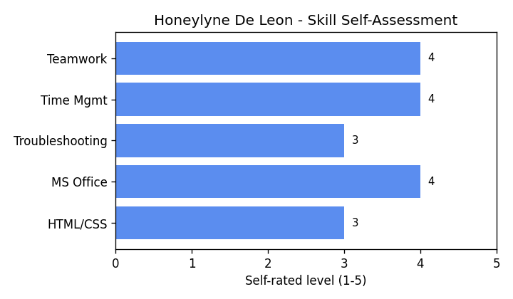

My Profile
About Me
I am currently a second-year BSIT student under section OLCA211E054. I enjoy learning about how websites and systems work behind the scenes, from the front-end design down to the database. This page was built as a school activity to practice writing clean and meaningfully structured HTML.
Background
I got interested in web development after using different online platforms for school and noticing how each page is organized into clear sections such as a header, navigation menu, and footer.
Skills
Technical Skills
- Basic HTML and CSS
- Microsoft Office (Word, Excel, PowerPoint)
- Basic troubleshooting of computer hardware and software
Soft Skills
- Time management
- Teamwork and collaboration
- Attention to detail

My Goals
Here are my goals for this semester, in order of priority:
- Pass Web Systems and Technologies 1 with a high grade
- Build a small personal portfolio website
- Learn the basics of database management
- Improve my skills in server-side scripting
Contact
Feel free to reach out through my school email for any questions
about this page or my coursework.
Response time is usually within one school day.